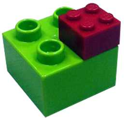
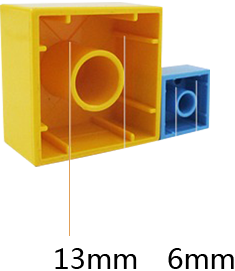
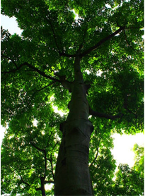
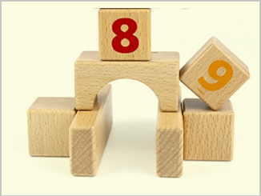
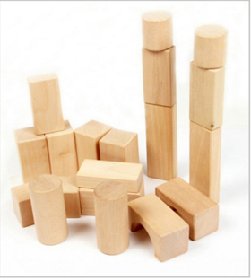
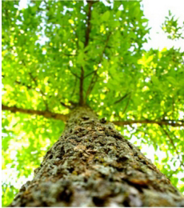

塑料积木
积木有两个基本组成部分——上部的突点和内部的孔。积木的突点比孔和侧壁之间的空间稍大。当您把积木挤压在一起时，突点向外推侧壁并向里推孔。这种材料有弹性并能保持原形，所以侧壁和孔将挤住突点。摩擦力也发挥了作用，它防止两块积木滑开。

大小颗粒对比图1：4
绿色为大颗粒积木适合1.5-5岁宝宝玩
红色为小颗粒积木适合5岁以上孩子玩
红色为小颗粒积木适合5岁以上孩子玩

小颗粒的拼插接口基本为大颗粒的一半，严格意义上说大颗粒和小颗粒是不能相互拼插的，但是基本颗粒是可以的。
木质积木
榉木
榉木产地欧洲和北美地区，木质性能稳定。纹路均匀，横切面有点像米粒一样的，一点一点，也耐摔。重量更明显，硬度更大。


荷木
荷木产于东南亚，为亚热带最常绿林中优势树种。被用做木制玩具，价格较松木高，密度高，较重，纹路均匀，耐摔。

